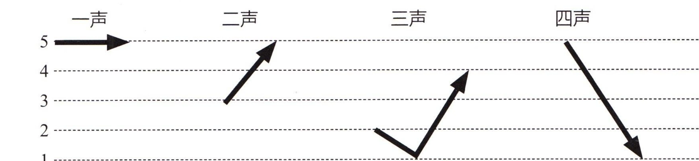
一声Первый тон二声Второй тон三声Третий тон四声Четвёртый тон先跟读音节， 再大声朗读。Listen and repeat the syllables, then read aloud.Прослушайте и повторите слоги, затем прочтите вслух.
看图片， 先跟读音节， 再大声朗读。Look at the pictures, listen and repeat the syllables, then read aloud.Посмотрите на картинки, прослушайте и повторите слоги, затем прочтите вслух.
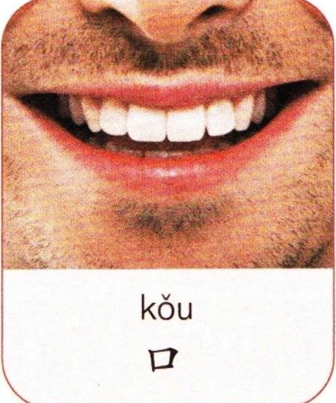
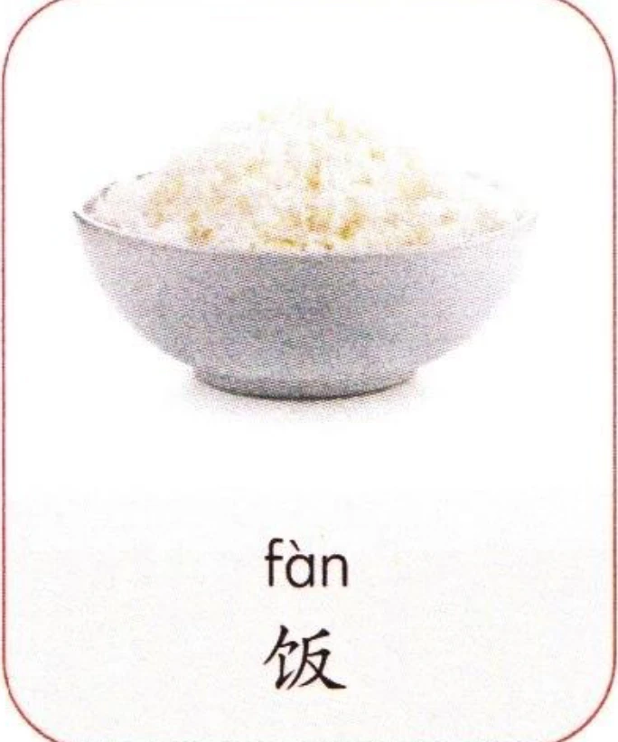
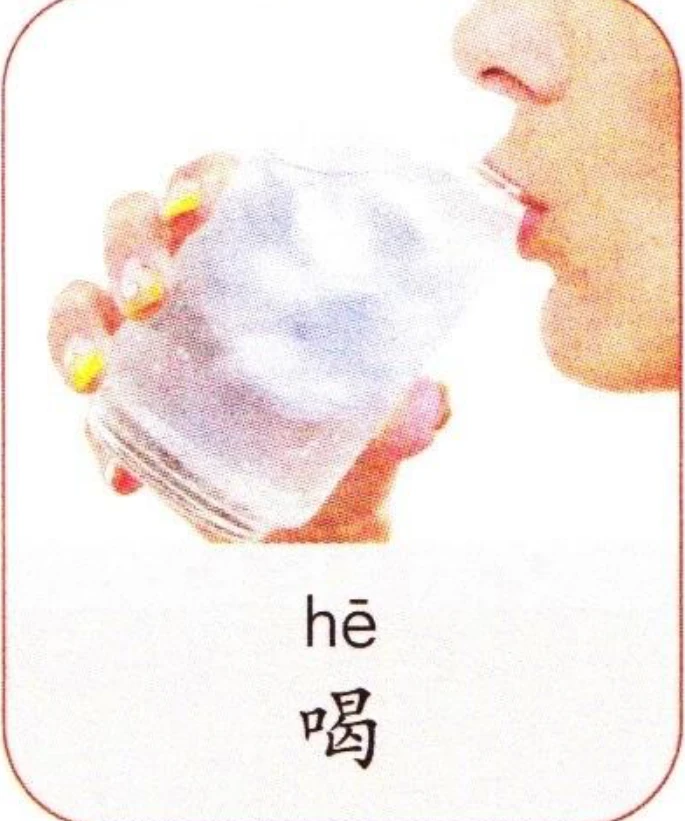
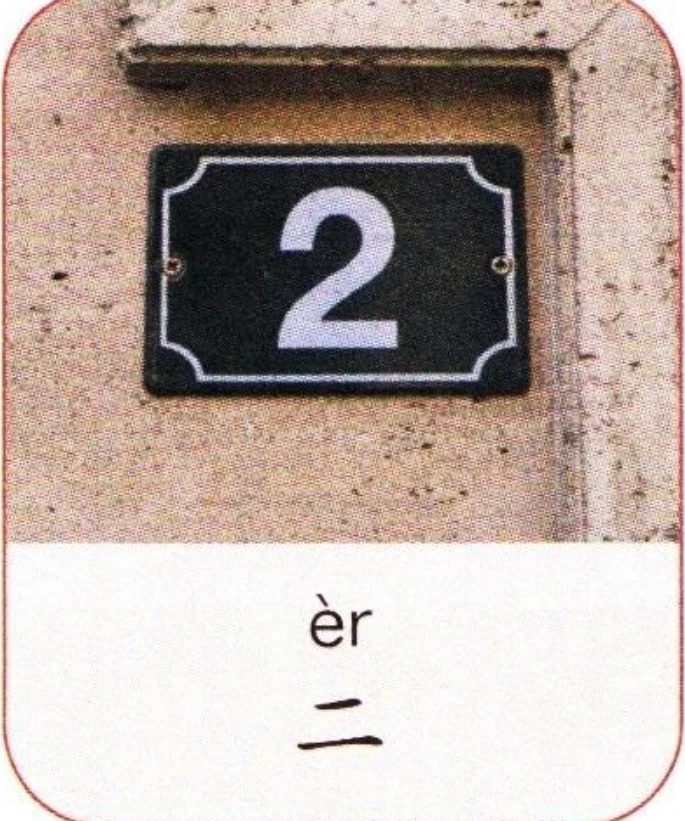
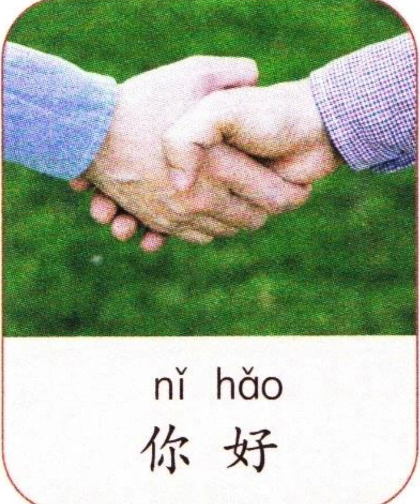
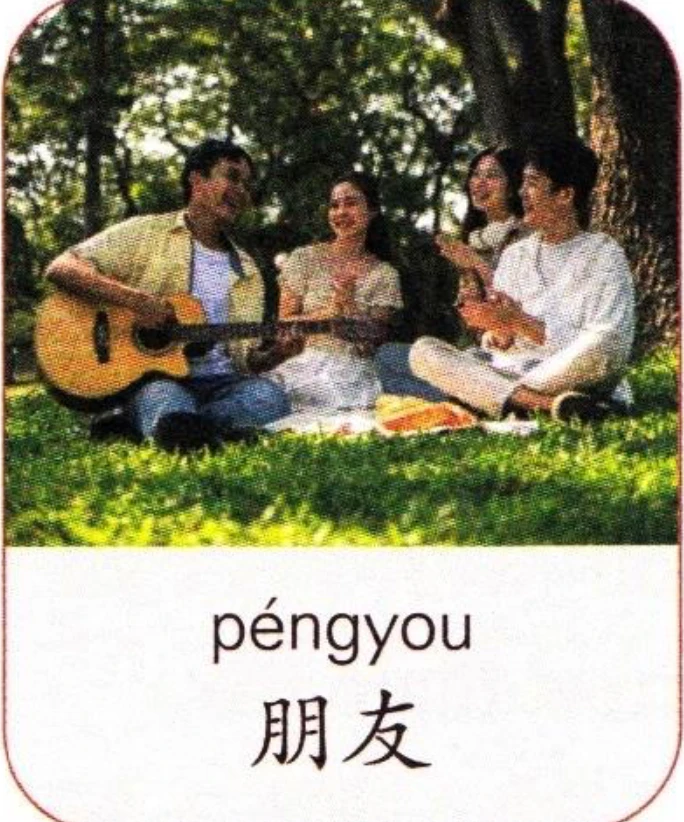
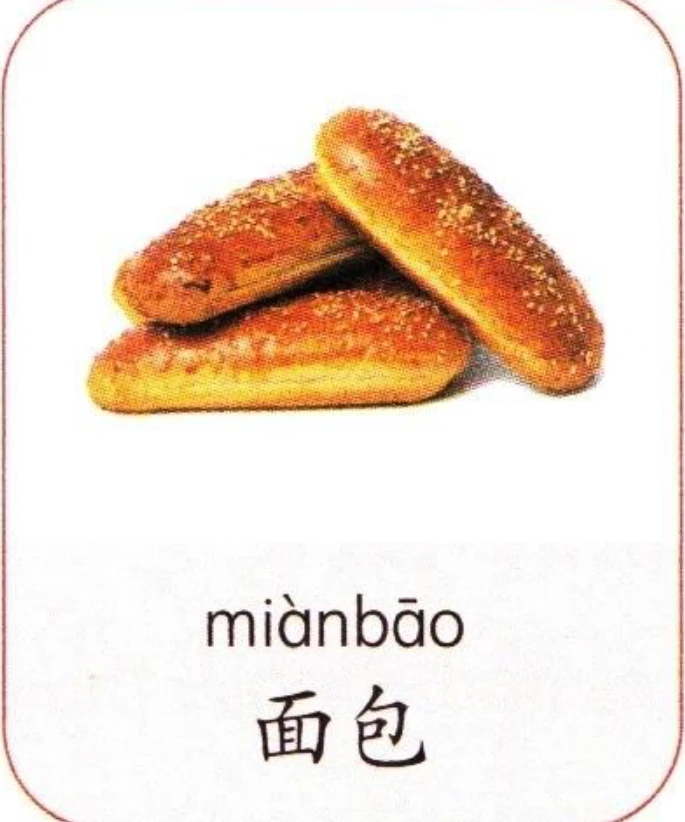
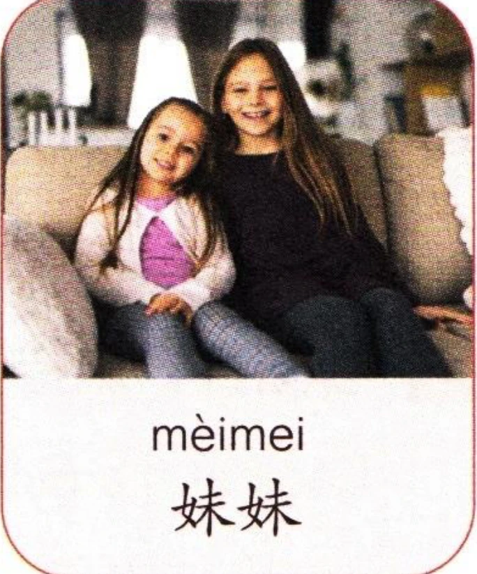
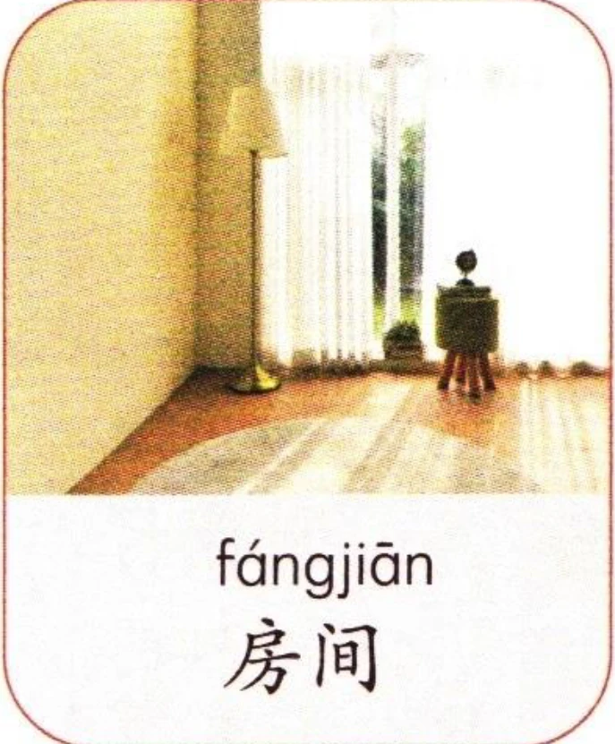
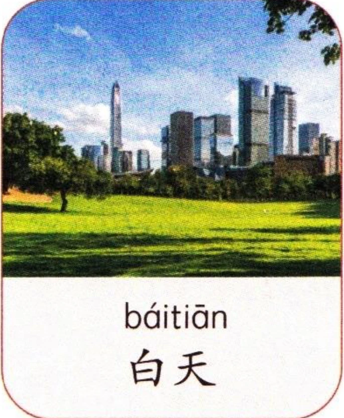
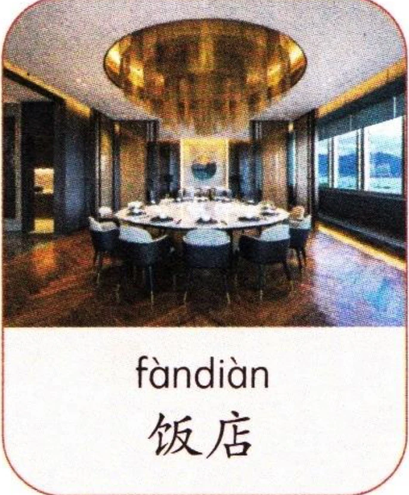
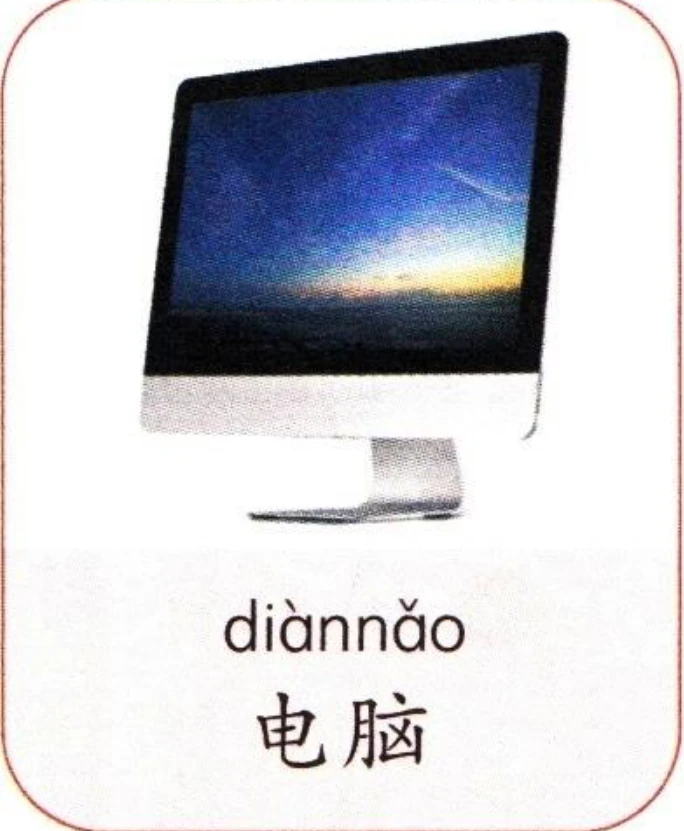